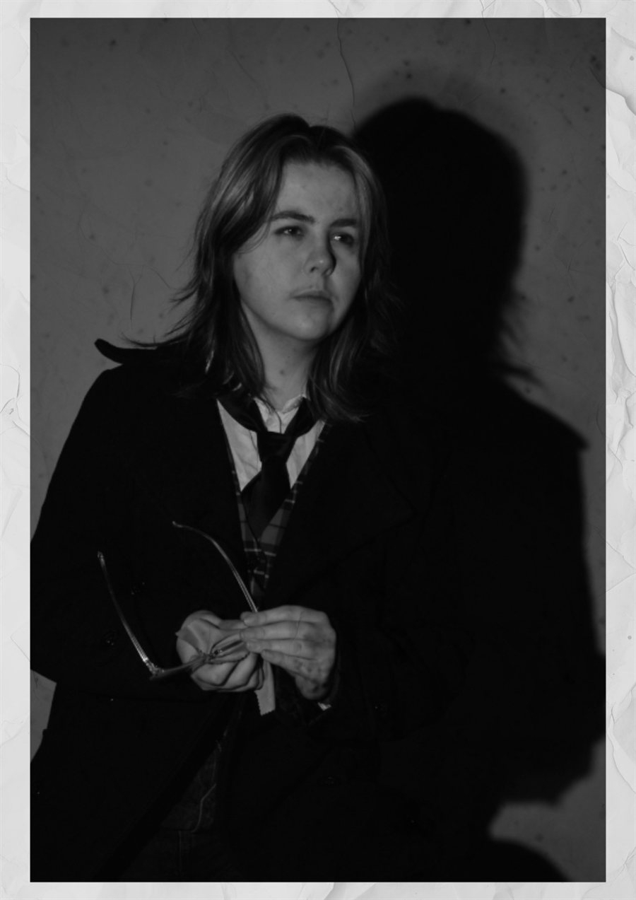
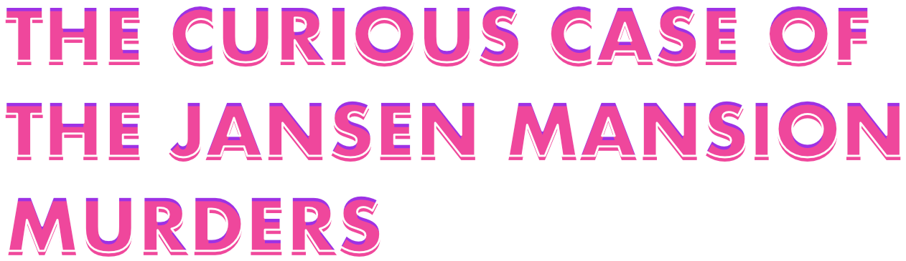
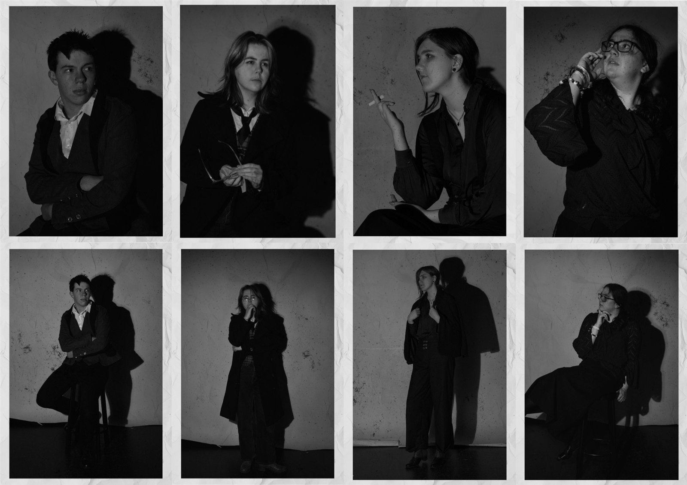
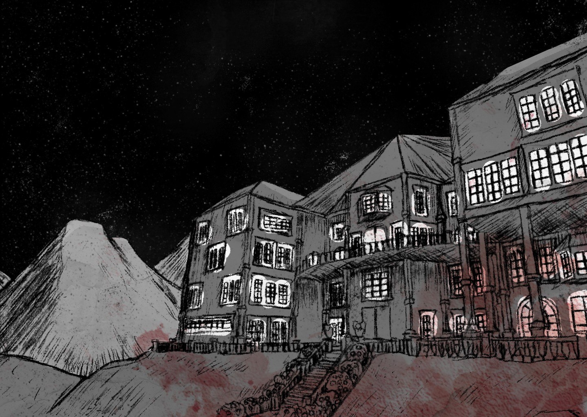
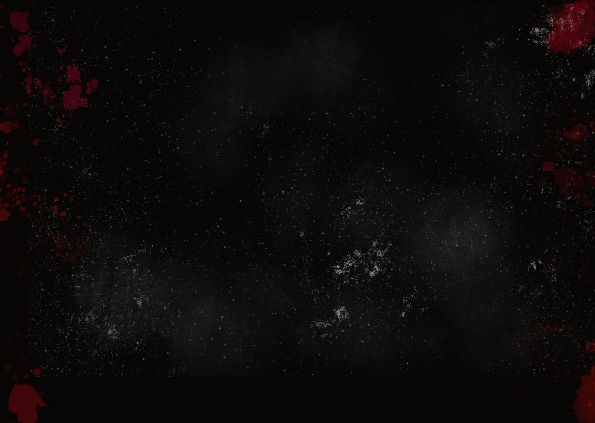
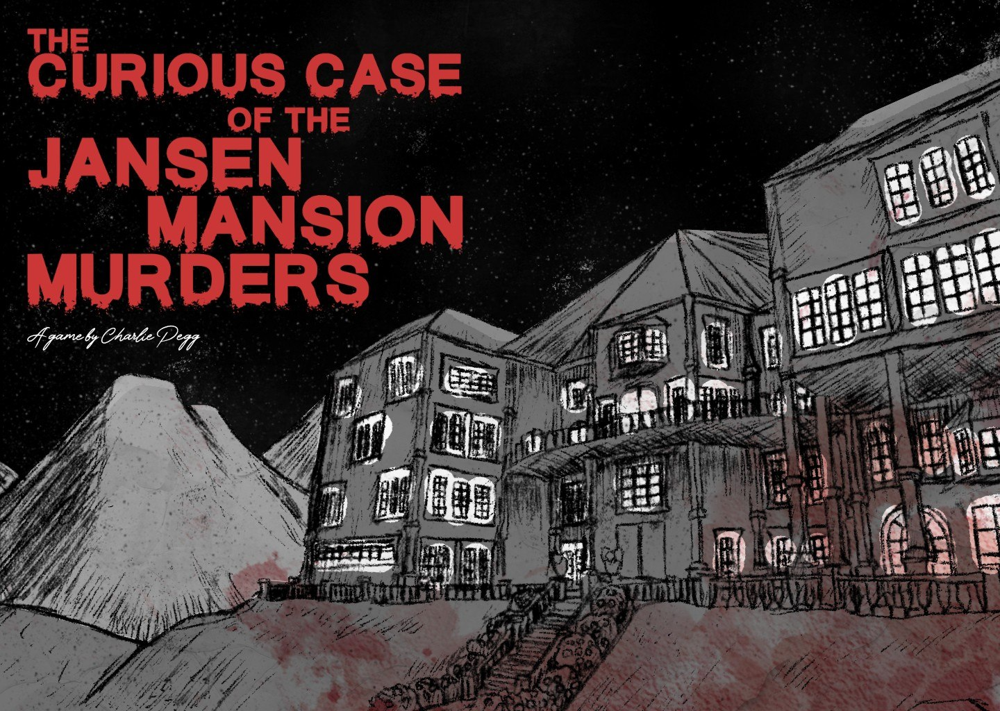

← Back to work
Murder! Murder! What are we to do? Well here's a C.Y.O.A where you decide exactly how the case played out - The Curious Case of the Jansen Mansion Murders. For this project, we had to make an interface/proof of concept where a user could make different choices and get different outcomes, and I chose to do a murder mystery with a bit of a twist to it. Instead of it being you participating in the case, you're one of the many members of the public who theorises about how a murder case that took place years ago might have played out. You play from the perspective of the only survivor of the mass murder, Liv, and depending on the choices you make, the killer/killers change. However, since this one is a proof of concept/beta test, you will be limited in your options for the time being. I chose to do a murder mystery because I have loved murder mysteries for ages now and wanted to give one a shot myself, and while I couldn't complete it in full, I'm proud that I did this much in the allocated time considering how many moving parts are in murder mysteries.
Skills utilised for this project: Photography - Illustration - MediBang - Affinity - Figma/Figma Make - Layout
Play the demo
Make your own theory for what happened with your own choices.
This game is designed for desktop. It might be harder to play on phone.
Before you play
This game has screen shake, which could cause problems for people who need reduced motion. It also has a mild flash, which could cause issues for anyone with photosensitivity. If these are concerns of yours, then please proceed with caution. If it ever becomes too much, refresh the page and this cover will come back.
Coming up with the concept
When it came to figuring out what the case specifically was (AKA what the player knew about it), I decided to take some inspiration from Agatha Christie's 'And Then There Were None' which was set on an island far away from the mainland with rough storms meaning help couldn't arrive to help out the victims. I felt this would work best since if the murder case had happened on mainland, it would be strange as to why no authorities were called upon the first death. I also did play with the idea of having it be that everyone died and you would get to pick who to play from the perspective of, but I chose in favor of playing through the eyes of the only survivor so there was consistency within the playthroughs.
Coming up with characters
For this project, I wanted the narrative to be an important aspect to the game because it's meant to be a game where you are theorising as to how an actual in-game cold case might have played out, and I took mild inspiration from 'The Deadliest Game' where the player character will re-enact their current theory as to how the murder took place. Because of that, I spent quite a bit of time figuring out the different characters and what their potential motives could be for each of their routes. For a lot of the characters, I tended to stick towards more classic forms of motives e.g. past grudges, secrets that couldn't come to light, moral beliefs, and for one, just for the thrill of killing. I also debated endings with multiple killers, endings with the player character being the killer, and ridiculous endings where it was all just supernatural rivalries, but while I did find them fun, they were too broad a scope for the project.
Since I now had a few motives to work with, I started trying to figure out who they were in the eye of the public. This had to be done because it's meant to be a game where you theorise what could have happened between the victims, and if it's a bunch of people who weren't in the public eye that's going to be a lot tougher. Therefore, I decided to give the characters some more public roles like a Mayor, a Singer, a renowned Scientist, etc. I also decided to have the main character be a woman murder mystery writer for a few reasons - 1. I wanted to have a more balanced cast, 2. One of my main inspirations was Agatha Christie, and I also wanted to reference 'The Deadliest Game' whose main character is a novelist 3. When in planning, I wanted to have the player character's killer ending be called 'Final Girl' and it's a bit harder to do that when the character isn't a woman, and 4. I really wanted the only survivor to be called 'Liv' because I really like puns and one of my favourite murder mystery shows names characters very blunty in a similar way. I did debate having it be that you could pick the gender, but I couldn't quite think of a way to incorporate it (and I really wanted to keep the pun intact).
Building the aesthetic of the game - Photography
I did struggle with this section for a while as I wanted to have a more gritty style but knew considering the time frame I wouldn't be able to do anything too high in effort. While thinking it over more, I remembered a video I watched called 'The Enduring Mystery of Jack the Ripper', which had an aesthetic that I thought would work well for what I was trying to achieve. As I examined the video for ideas, I realised that I could actually use my photography skills and get my friends to dress up as the different characters and be the faces for them, therefore I gathered some friends and we did a couple of photoshoots. After some greyscaling and texturing (which I got from pngtree, links to all textures used will be at the bottom of the page), I had a lineup of some of the more important characters that I had some clearer ideas for what to work with.

Building the aesthetics of the game - Landing screen
For the landing screen, I wanted to lean into some of the sketches that were in my visual precedent. Since this was taking place in a large mansion, I decided to hunt down my old Roblox mansion and redraw it using a charcoal sheet that I had on me, resulting in a gritty and sketchy look that I really liked. I scanned the drawing and put it into MediBang to do some extra greyscaling of the drawing and to adjust the darkness of the lines. Once I did that, I brought it into Affinity to add some textures (linked below) and organise how it would sit, creating this background for the landing screen that really worked with the aesthetic I was going for.

Building aesthetics - background
Although I did originally consider having the background be a floorplan of the mansion that changes to the room the player is in, I realised that having that in the background with the photos on top and the text on top of that could result in too much clutter and would be confusing for a viewer. Therefore I decided to stick to something that was much simpler but still worked within the aesthetic, creating this background which has a bit of blood texture (linked below) and the other aforementioned textures. Whenever I tested it out in Figma, I found it to work nicely. Especially whenever it was tested in Figma Make as it flowed well from the landing screen.

Putting it together in Figma
Now that I had basically all my assets for the game in order, I started working more seriously in Figma to figure out how all the paths would branch off of each other. I also made sure to use the desktop framing so it would work for a general desktop sizing. I tested out some different fonts and different ways to do buttons, and settled on the buttons being lighter so they stood out against the black background. I also tested out what kind of fonts to use, and chose BM HANNA as it stood out against the background more which was something fonts like Bodoni were struggling to do. Furthermore, I ended up changing the red to a lighter red as in a contrast checker the one I was originally working with didn't pass on the smaller letters check. I also tested out different ways to format the pages so all necessary dialogue and choices fit on the screen.
If you'd like to read more about some of the thought processes I had in Figma, here's the Figma Design link (opens in a new tab) for your perusal.
![Screen from the game titled The case at hand, in red lettering on a dark background with blood splatters. White text explains the case: a party at the Jansen mansion on an island in 1913 left five attendees dead and one survivor, Liv. However, the public has been left without answers as to what happened, leaving them to theorise possible endings. Below, under the heading The attendees, are six framed portraits with captions: Armand the Mayor, Josias the bar owner, Rue the singer, Liv the murder mystery novelist and only survivor, and two silhouettes for Oakley the scientist and Mx. Jansen the host. A Begin Theory button sits at the bottom.](assets/jansen-case-screen-2.webp)
Finishing up in Figma Make
A lot of the work I did in Figma Make was testing out ways to show visual interest with the assets that I had and replaying through it to see if there's anything in particular that was bugging me. I decided that my way of showing visual interest was going to be through having mild shake on the landing screen and the photos as that was something my visual precedent did with some of their visuals. I quite liked them when I tested them out, so I decided to keep using them. I also made sure that the buttons had a nice response when you hovered over them and clicked on them so it would feel nice for the viewer. When testing it, I tried out having the explanation of the case typing itself out, and while I really liked it and chose to keep it for the intro, I didn't do the same with any other screens since it would probably take a while to type everything out and waiting might bore the player. I also added the ability to skip the intro dialogue by clicking it because I was getting frustrated having to wait for it to finish typing itself out when I was testing it and knew that meant anyone playing would get frustrated too. When testing out transitions, I found fade ins and fade outs to work best so as to not surprise the player too much. I was considering making the transition to the ending screen be something similar to lightning flashes, but I felt that would be too much especially for anyone photosensitive, so I instead made it a fade to red so it was still different from the usual fade to blacks.

If you want to look more at how I worked with Figma Make, here's the link to the Figma Make file (opens in a new tab).
Final thoughts and attirubitions
Overall, I had quite a bit of fun working on this project. I think I did well putting together a proof of concept and managing to create an aesthetic suited for a murder mystery cold case. I would really love to revisit this project eventually, but I'm happy with what I achieved. It was fun learning how to work in Figma and what kind of things are done in order to make something satisfying to go through.
For the blood splatter texture, click here (opens in a new tab)
For the paper texture, click here (opens in a new tab)
For the film grain texture, click here (opens in a new tab)